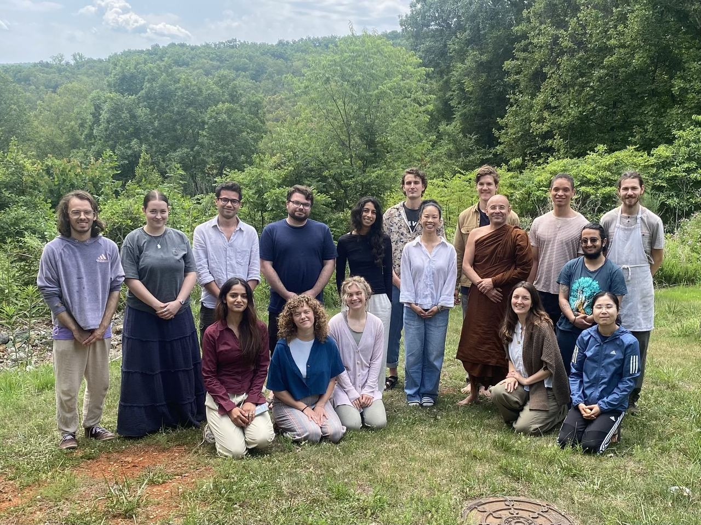

Every retreat has already been paid for by past participants and donors. Your gift pays for the next person's seat.
Dharma Gates, Inc. · EIN 84-4831330 · A registered 501(c)(3) nonprofit. Donations are tax-deductible to the extent allowed by law.

Do they have the inner resources necessary to navigate the increasingly turbulent and precarious times we are in? Dharma Gates exists to make sure deep practice is within reach for any young person who is called toward it — regardless of what they can pay.
Inspired by the Buddha's teachings on generosity as a spiritual practice, we don't charge for retreats or suggest amounts. We fully cover all expenses — meals, housing, rental costs, and any teacher fees — and offer every program as a gift.
*Does not include Dharma Gates retreat staff labor or administrative costs. figures from current Retreat Cost page — reconcile with Dana page ($550 / 7 days)
Any amount, by card or bank, through Every.org. Depending on one's life situation, this could be $3 or $3,000.
Give onceA critically helpful way to support our programming and its longevity. Recurring gifts let us plan retreats a year out.
Give monthlycurrent site sends Supporting Sangha to Kindful (dharmagates-bloom.kindful.com) — confirm which platform is canonical
If you've sat with us: our retreats typically cost about $100 per participant per day. Covering a day — or a week — for someone else is a beautiful way to give back.
Sponsor a dayThe current site has three thin donation pages (one-time, one-time copy, recurring) with embedded forms plus a header button that skips them all and goes to Every.org. Proposal: one page, one processor, plus this context. Owner: Aaron.
Let your friends and family know about our work, share Dharma Gates programs on social media, help clean up after a retreat, or volunteer your time in another way; each contribution enables the sustainability of our donation-based offerings. We are grateful for all forms of support.